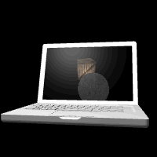

这一节实现在纹理中渲染3D场景，这是个很有用的方法，可以用来实现鼠标选取物体、倒影等许多3D效果。
如图22

图22
为实现这个效果，我们可以动态地把板条箱与月球的运动场景“画”到一个纹理缓存中，再把这个纹理缓存作为纹理“贴”到笔记本电脑屏幕位置。
function webGLStart()
{
//...
initTextureFramebuffer();
loadLaptop();
}
先读取一个笔记本电脑模型的json文件，这个和之前的方法一样。
这一节的重头戏是帧缓存（FrameBuffer），它是显示画面的一个直接映象，帧缓存的每一存储单元对应一个要绘制的像素，整个帧缓存对应一帧图像。帧缓存可以包含颜色缓存、深度缓存等的组合。WebGL有一个默认的帧缓存，也就是我们之前一直在用的，绘制到整个canvas的帧缓存。
我们也可以自己额外建立帧缓存，用于在显示区域的特定位置另外渲染3D场景。
var rttFramebuffer;
var rttTexture;
function initTextureFramebuffer()
{
rttFramebuffer = gl.createFramebuffer();
gl.bindFramebuffer(gl.FRAMEBUFFER, rttFramebuffer);
rttFramebuffer.width = 512;
rttFramebuffer.height = 512;
先定义全局变量，建立帧缓存，设置将要使用的帧缓存对应的场景大小，这个帧缓存输出的图像将作为纹理，而纹理尺寸需要是 2 的幂，512在这里是个比较合适的尺寸，256太小，1024没有明显改善。
rttTexture = gl.createTexture();
gl.bindTexture(gl.TEXTURE_2D, rttTexture);
gl.texParameteri(gl.TEXTURE_2D, gl.TEXTURE_MAG_FILTER, gl.LINEAR);
gl.texParameteri(gl.TEXTURE_2D, gl.TEXTURE_MIN_FILTER, gl.LINEAR);
建立一个纹理对象，这里和之前相似。
gl.texImage2D(gl.TEXTURE_2D, 0, gl.RGBA,
rttFramebuffer.width, rttFramebuffer.height,
0, gl.RGBA, gl.UNSIGNED_BYTE, null);
texImage2D和之前不大一样，之前我们使用的纹理都来自图片，而这次是来自自己定义的帧缓存渲染的结果。这里使用了texImage2D的另一个版本，告诉显卡准备好特定大小的缓存。最后一个参数用来提供一个数组指针，把数组内容复制到显卡开辟的缓存区，这里给一个null，表示没有要复制的数组。
var renderbuffer = gl.createRenderbuffer();
gl.bindRenderbuffer(gl.RENDERBUFFER, renderbuffer);
gl.renderbufferStorage(gl.RENDERBUFFER, gl.DEPTH_COMPONENT16,
rttFramebuffer.width, rttFramebuffer.height);
建立一个渲染缓存，用来为帧缓存的绘制提供处理数据的存储空间，申请了给定长宽的16位数值空间。
gl.framebufferTexture2D(
gl.FRAMEBUFFER, gl.COLOR_ATTACHMENT0, gl.TEXTURE_2D, rttTexture, 0);
gl.framebufferRenderbuffer(
gl.FRAMEBUFFER, gl.DEPTH_ATTACHMENT, gl.RENDERBUFFER, renderbuffer);
上面建立帧缓存的时候已经bind它了，还是老意思，它作为“当前”帧缓存，这里就给当前帧缓存分配渲染目标（把颜色涂到哪）——刚刚建立的纹理；再给当前帧缓存分配处理深度信息的存储空间——刚刚建立的渲染缓存。
gl.bindTexture(gl.TEXTURE_2D, null);
gl.bindRenderbuffer(gl.RENDERBUFFER, null);
gl.bindFramebuffer(gl.FRAMEBUFFER, null);
}
然后清理一下三个“当前”。
var laptopAngle = 0;
function drawScene()
{
gl.bindFramebuffer(gl.FRAMEBUFFER, rttFramebuffer);
drawSceneOnLaptopScreen();
gl.bindFramebuffer(gl.FRAMEBUFFER, null);
上面说过，有一个默认的帧缓存，我们绘制都直接绘制到canvas上。这里把“当前”帧缓存设置为rttFramebuffer，drawSceneOnLaptopScreen()是个和之前章节drawScene()一样的绘制函数，把板条箱和月球绘制到“当前”帧缓存“，只不过为了方便，代码中把之前提供表单由用户输入的数据设置为固定值了。
绘制完后，板条箱和月球的场景已经在前面与rttFramebuffer绑定的纹理缓存中了。再把“当前”帧缓存设置为null，那么接下来的绘制又会在默认的帧缓存——我们的canvas中。
//...
gl.uniform1i(shaderProgram.showSpecularHighlightsUniform, true);
gl.uniform3f(shaderProgram.pointLightingLocationUniform, -1, 2, -1);
gl.uniform3f(shaderProgram.ambientLightingColorUniform, -1, 2, -1);
gl.uniform3f(shaderProgram.ambientLightingColorUniform, 0.2, 0.2, 0.2);
gl.uniform3f(shaderProgram.pointLightingDiffuseColorUniform, 0.8, 0.8, 0.8);
gl.uniform3f(shaderProgram.pointLightingSpecularColorUniform, 0.8, 0.8, 0.8);
gl.uniform3f(shaderProgram.materialAmbientColorUniform, 1.0, 1.0, 1.0);
gl.uniform3f(shaderProgram.materialDiffuseColorUniform, 1.0, 1.0, 1.0);
gl.uniform3f(shaderProgram.materialSpecularColorUniform, 1.5, 1.5, 1.5);
gl.uniform1f(shaderProgram.materialShininessUniform, 5);
gl.uniform3f(shaderProgram.materialEmissiveColorUniform, 0.0, 0.0, 0.0);
gl.uniform1i(shaderProgram.useTexturesUniform, false);
if (laptopVertexPositionBuffer)
{
//绘制笔记本电脑模型
}
在绘制笔记本模型之前对光线进行了一系列设置，这次考虑了不同材质对光线的反射性质有不同，所以不但设置了环境光、漫反射光、高光，还增加设置了材质本身对这三种光反射类型的特定增益/削弱，在片元shader中材质特征会与光反射特征结合计算光照效果。
gl.uniform3f(shaderProgram.materialAmbientColorUniform, 0.0, 0.0, 0.0);
gl.uniform3f(shaderProgram.materialDiffuseColorUniform, 0.0, 0.0, 0.0);
gl.uniform3f(shaderProgram.materialSpecularColorUniform, 0.5, 0.5, 0.5);
gl.uniform1f(shaderProgram.materialShininessUniform, 20);
gl.uniform3f(shaderProgram.materialEmissiveColorUniform, 1.5, 1.5, 1.5);
gl.uniform1i(shaderProgram.useTexturesUniform, true);
gl.bindBuffer(gl.ARRAY_BUFFER, laptopScreenVertexPositionBuffer);
gl.vertexAttribPointer(shaderProgram.vertexPositionAttribute,
laptopScreenVertexPositionBuffer.itemSize, gl.FLOAT, false, 0, 0);
gl.bindBuffer(gl.ARRAY_BUFFER, laptopScreenVertexNormalBuffer);
gl.vertexAttribPointer(shaderProgram.vertexNormalAttribute,
laptopScreenVertexNormalBuffer.itemSize, gl.FLOAT, false, 0, 0);
gl.bindBuffer(gl.ARRAY_BUFFER, laptopScreenVertexTextureCoordBuffer);
gl.vertexAttribPointer(shaderProgram.textureCoordAttribute,
laptopScreenVertexTextureCoordBuffer.itemSize, gl.FLOAT, false, 0, 0);
gl.activeTexture(gl.TEXTURE0);
gl.bindTexture(gl.TEXTURE_2D, rttTexture);
gl.uniform1i(shaderProgram.samplerUniform, 0);
setMatrixUniforms();
gl.drawArrays(gl.TRIANGLE_STRIP, 0,
laptopScreenVertexPositionBuffer.numItems);
mvPopMatrix();
}
画笔记本电脑模型的屏幕，为了真实感，显示屏更多的光应该是自己发出的，所以引入了一个放射光（Emissive Color）的概念，其实它就相当于环境光，只是不跟环境光混淆，这样如果环境光改变（比如变成红色），也不影响模型中屏幕应该“发出”的颜色。
模型的屏幕就是一个贴了纹理的矩形，纹理是前面帧缓存绘制的板条箱和月球，矩形在initBuffer()中设置了顶点、法向量和纹理。
<script id = "per-fragment-lighting-fs" type = "x-shader/x-fragment">
//...
if (uUseTextures)
{
vec4 textureColor =
texture2D(uSampler, vec2(vTextureCoord.s, vTextureCoord.t));
materialAmbientColor = materialAmbientColor * textureColor.rgb;
materialDiffuseColor = materialDiffuseColor * textureColor.rgb;
materialEmissiveColor = materialEmissiveColor * textureColor.rgb;
alpha = textureColor.a;
}
gl_FragColor = vec4(
materialAmbientColor * ambientLightWeighting +
materialDiffuseColor * diffuseLightWeighting +
materialSpecularColor * specularLightWeighting +
materialEmissiveColor,
alpha
);
}
</script>
结合材质与光照的片元shader，与之前的原理相同，只是增加了一些计算，注意最后加上的materialEmissiveColor。具体参考完整代码。